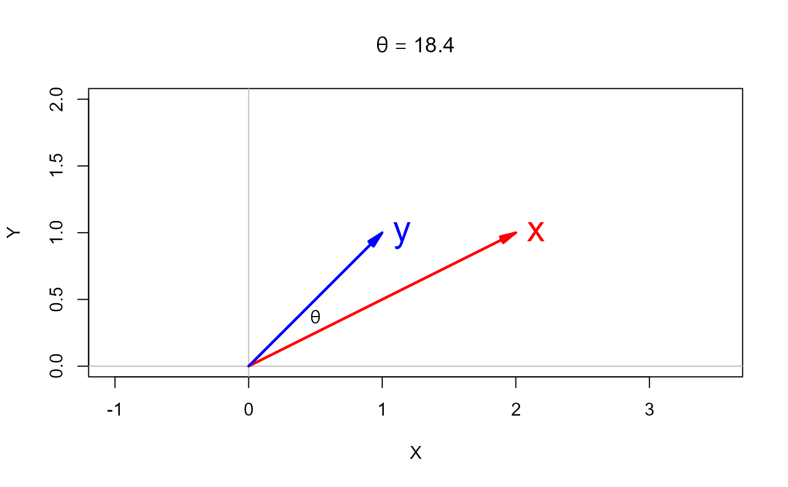
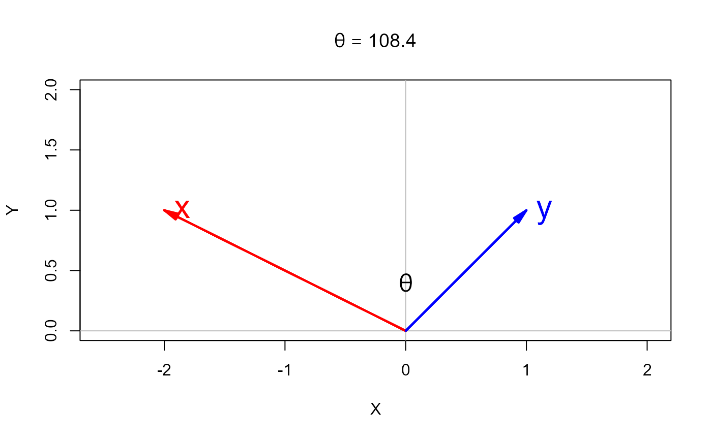

angle calculates the angle between two vectors.
angle(x, y, degree = TRUE)
| x | a numeric vector |
|---|---|
| y | a numeric vector |
| degree | logical; should the angle be computed in degrees?
If |
a scalar containing the angle between the vectors
#> [,1] #> [1,] 18.43495angle(x, y, degree = FALSE) # radians#> [,1] #> [1,] 0.3217506# visually xlim <- c(0,2.5) ylim <- c(0,2) # proper geometry requires asp=1 plot( xlim, ylim, type="n", xlab="X", ylab="Y", asp=1, main = expression(theta == 18.4))#> [,1] #> [1,] 108.4349angle(x, y, degree = FALSE) # radians#> [,1] #> [1,] 1.892547# visually xlim <- c(-2,1.5) ylim <- c(0,2) # proper geometry requires asp=1 plot( xlim, ylim, type="n", xlab="X", ylab="Y", asp=1, main = expression(theta == 108.4))